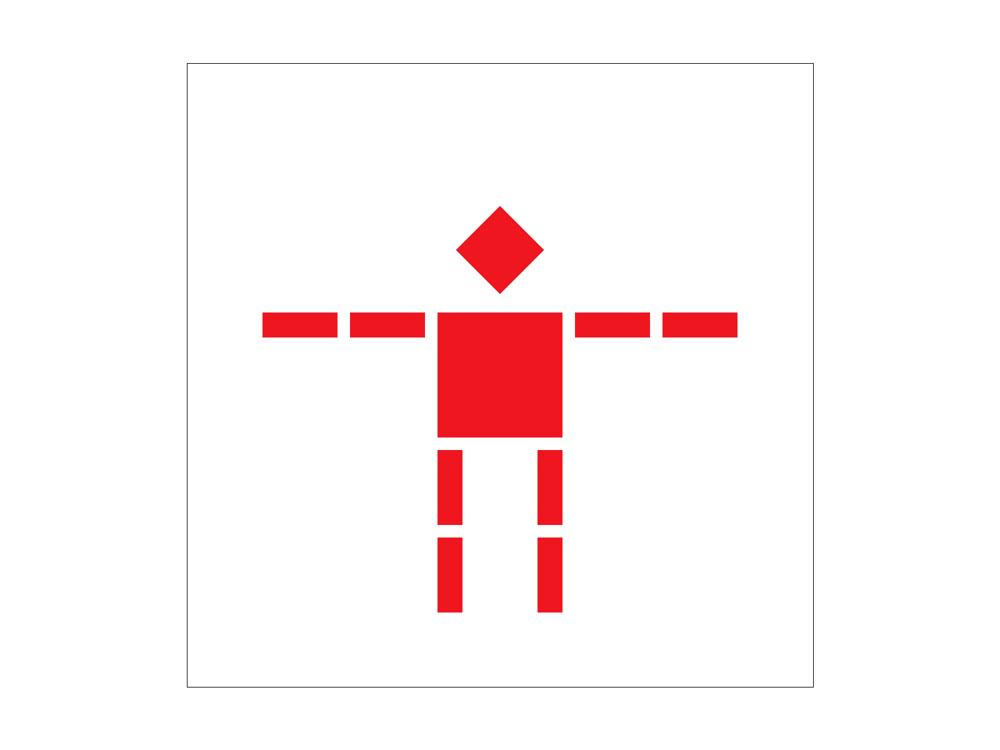

Give a high-level overview of what you implemented in this project. Think about what you've built as a whole. Share your thoughts on what interesting things you've learned from completing the project.
To create cubeman, the three transformation functions are implemented in the homogeneous coordinates: translate, scale, and rotate.
|

|
anzeliu.github.io/cs184-proj-webpage/proj1